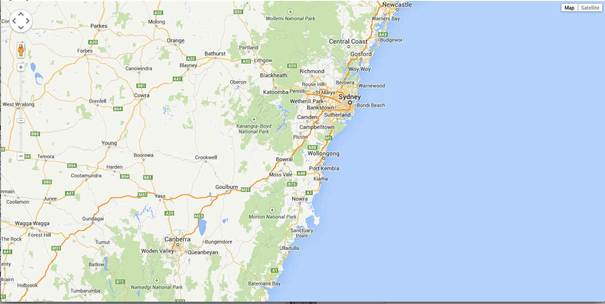
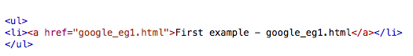
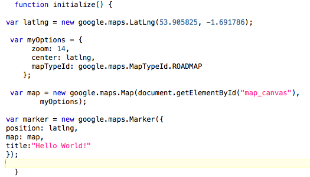
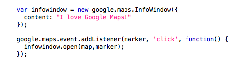

Getting Started
Creating your First Google Map Mash-Up
Okay, so now you can access your personal webspace and have made a very basic page. It's time to create a page with Google Maps!
- Copy the following text (also here) into a new file and save as google_eg1.html

- Save the pasted text as google_eg1.html in your local directory, and then copy it to your WWW/GEOG5870 directory using WinSCP (if off campus).
- Now try browsing to this file (i.e. www.personal.leeds.ac.uk/~username/geog5870/google_eg1.html)
- It is important to make sure that the '~' character in the URL used remains as such, and is not modified by your browser - you may need to change it back in the url entry box if necessary.
And if the Google Map gods are feeling kind, you should end up with this:

You will discover that this map, although presented in a basic manner, can be panned using the mouse like other Google Maps.
Organising your webspace
Before we start making some adjustments to this map, make sure that you save each version of your map under a different name so you can refer back to the working code when something breaks!
- Edit the file index.html that you created earlier
- Add a link to the new file google_eg1.html
One way of presenting links is as a bulleted list, thus you could create a link like this (making sure that the file that you are pointing to is in the same directory as index.html):

You can now publish web pages on the ISS personal server (or on your own server), and show off your maps.
Give it a go before getting stuck into the tasks below.
Tasks: Adjusting the map
Now you have your first map, let's do something with it.
- Default location:Let's change the default location. To do this, find the following lines of code:
var latlng = new google.maps.LatLng(-34.397, 150.644);
Notice the latitude and longitude values. This determines the default
centre location of your map. These are the numbers that we will change.
To do this, go to LatLong.net and
input a location of your choosing. Enter these values into the code,
save the code. Hit refresh - what do you see? Hopefully your map
should now be centred on your chosen location.
- Zoom: Find the line that sets the zoom level. It should be set at "8".
Change this number to a value between 0 and 20. Save and refresh. What
number is the most zoomed in? What is the most zoomed out?
- Changing the base map: Find the line that sets the base map:
mapTypeId: google.maps.MapTypeId.ROADMAP
You can change the MapTypeId from ROADMAP to other values. Here are the valid map types:
- ROADMAP displays the normal, default 2D tiles of Google Maps.
- SATELLITE displays photographic tiles.
- HYBRID displays a mix of photographic tiles and a tile layer for prominent features (roads, city names).
- TERRAIN displays physical relief tiles for displaying elevation and water features (mountains, rivers, etc.).
- Adding a point marker: The following code (also here) produces a marker
icon on the center of your map. REPLACE the LatLng values with the
latitude longitude coordinates you used for the center of your map.

It's important that this text is placed within the
initialize() function. Move it outside the function to see
what happens! Save your file and refresh. Hopefully, you should see a
Marker at the centre for your map.
- Info Window: Now we will attach an info box to the marker we
have just created. This will appear when you click on it. Immediately
after the code for adding a marker in, insert the following (also here) :

You have now created your very own first mash-up! See - there's nothing to this Google Maps malarky...
[ Next: Basic KML ]
[Course Index | Unit Overview]